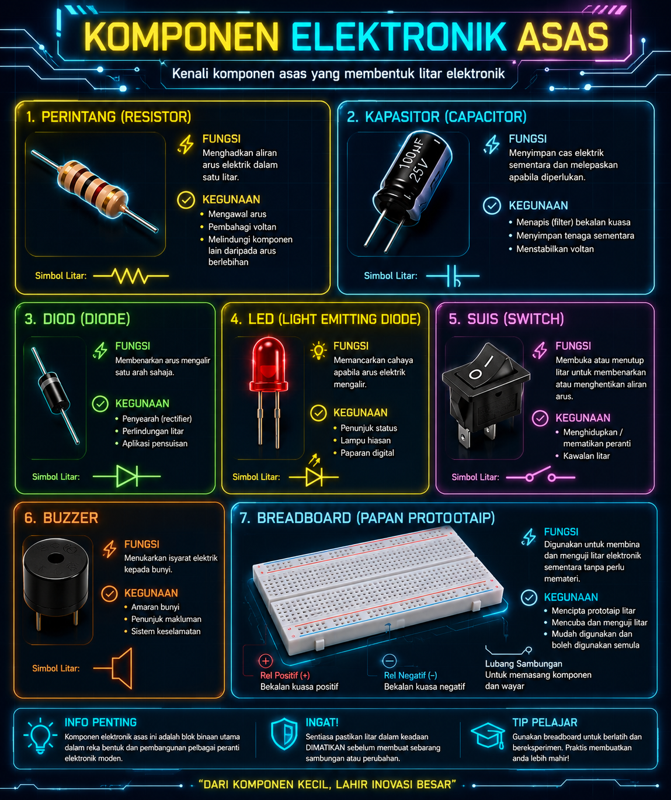
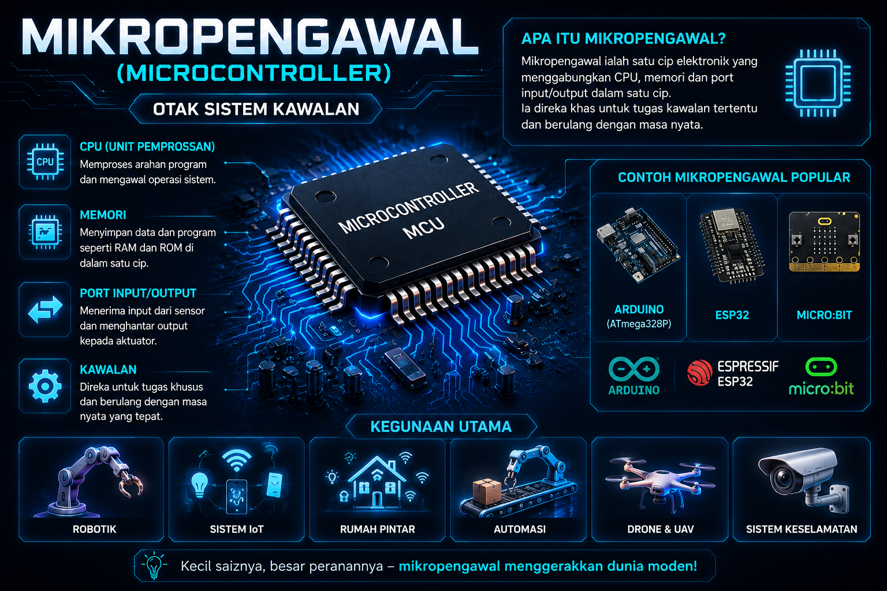
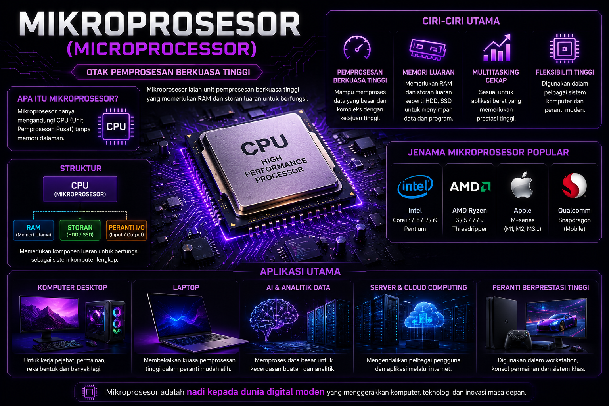
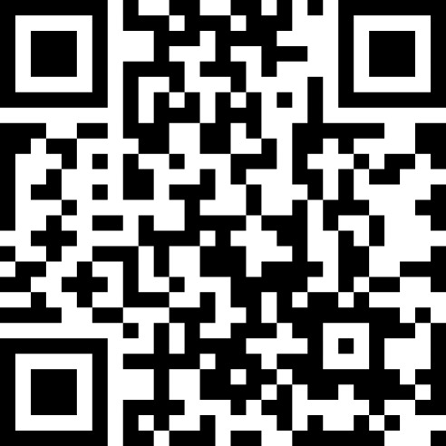

Memuatkan Sistem Pembelajaran...
Terokai Mikropengawal, Mikroprosesor, AR dan Teknologi Elektronik Masa Hadapan
Terokai prinsip asas elektronik, komponen perkakasan, perbezaan mikropengawal & mikroprosesor, serta aplikasinya dalam dunia pintar.
Elektronik ialah bidang teknologi yang menggunakan aliran elektron dalam komponen elektronik untuk mengawal, memproses dan menghantar maklumat.
Klik terus pada bulatan nadi biru di atas imej infografik, atau ketik mana-mana kad pilihan di bawah untuk mempelajari fungsi komponen.


Satu cip litar bersepadu (IC) yang mengandungi CPU, memori, dan port input/output untuk mengawal sistem elektronik kecil.

Cip pemprosesan berkuasa tinggi tanpa memori dalaman yang digunakan dalam komputer untuk memproses kuantiti data yang besar.
Adakah anda keliru antara kedua-duanya? Ketahui perbezaan ketara dari segi struktur, aplikasi, kos dan kecekapan kuasa secara visual.
Bagaimanakah teknologi elektronik mengubah gaya hidup harian kita? Lihat contoh aplikasi di sekeliling anda.
Tiada nota dijumpai untuk carian tersebut. Cuba kata kunci lain.
Klik ikon chatbot di penjuru kanan bawah untuk bertanya soalan berkaitan Reka Bentuk Elektronik RBT Tingkatan 2.
Interaksi secara terus dengan perkakasan melalui model 3D berkualiti tinggi. Klik pada titik panas (hotspot) untuk mempelajari reka bentuk sistem!
Pilih atau klik mana-mana titik biru (Hotspot) di atas model 3D untuk melihat perincian fungsinya secara mendalam di sini.
Main game kuiz RBT yang menarik ini untuk menguji sejauh mana anda telah menguasai Reka Bentuk Elektronik!
Uji kefahaman anda tentang Reka Bentuk Elektronik, Mikropengawal, Mikroprosesor dan Komponen Elektronik melalui permainan kuiz interaktif ZEP.

📱 Imbas QR Code untuk bermain menggunakan telefon pintar
Melengkapkan bacaan pengenalan elektronik & Komponen Asas.
Berinteraksi dengan model 3D dan mengklik semua hotspot komponen.
Menyelesaikan kuiz ZEP di sebelah dengan markah penuh.
Sila ambil tangkapan skrin (screenshot) markah kuiz anda bersama lencana sebagai bukti pembelajaran anda untuk dikongsi dengan guru RBT anda!
BIJAK ELEKTRONIK ialah sebuah platform pembelajaran interaktif yang dibangunkan khusus bagi membantu pelajar Tingkatan 2 sekolah menengah di Malaysia menguasai subtopik Reka Bentuk Elektronik dalam mata pelajaran Reka Bentuk dan Teknologi (RBT).
Berdasarkan Dokumen Standard Kurikulum dan Pentaksiran (DSKP) serta buku teks KPM, platform ini mengintegrasikan teknologi visualisasi model 3D berkeupayaan AR (Augmented Reality), pembantu maya peribadi AI Cikgu Elektronik, dan pendekatan pembelajaran berasaskan gamifikasi (Quiz) bagi menghasilkan suasana pembelajaran abad ke-21 yang seronok dan bermakna.